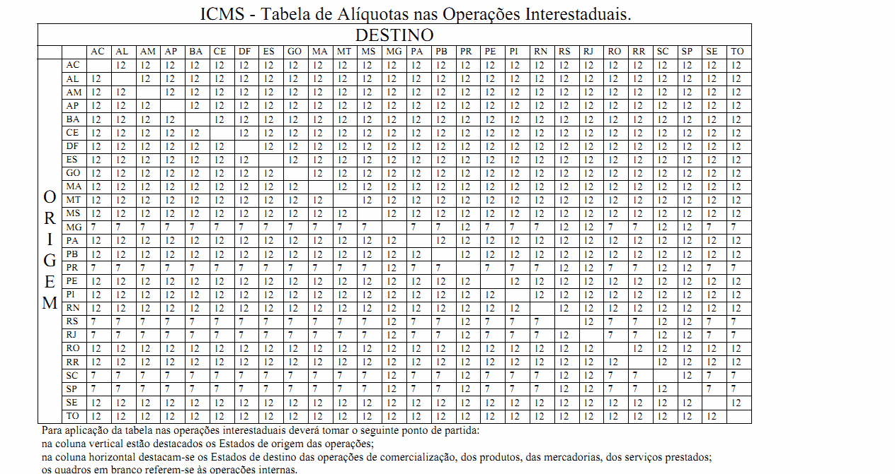
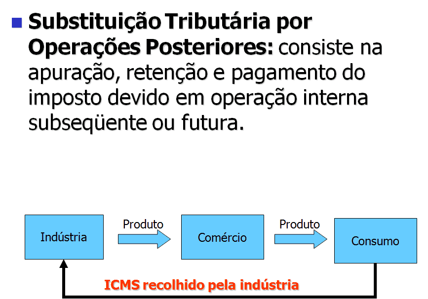
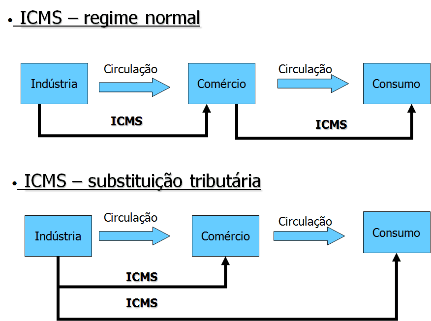

Convenções Utilizadas |
  
|
Convenções Utilizadas |
|
Com o objetivo de tornar a leitura deste manual mais clara, adotamos algumas convenções de nomenclatura e tipográficas, relacionadas a seguir:
TECLAS : As teclas foram representadas pelo nome das mesmas entre os caracteres "<" e ">". Exemplos: <F2>, <F10>, <S>, etc. Quando for necessário representar a pressão de mais de uma tecla foi acrescentado o caractere "+" entre as teclas. Exemplos: <Alt+R>, <Ctrl+PgDn>, etc.


Mensagens de Erros ou Alertas. Exemplo: Data de Saída menor que a data do movimento. Esta transação está configurada para não aceitar movimento com data retroativa. Verifique.

Notas. Exemplo. Quando você escolher multi-usuário é necessário, também efetuar a instalação nas estações onde rodará o sistema.
Para indicar que um hiperlink de um endereço da web usamos a esta figura  antes do endereço. exemplo:
antes do endereço. exemplo:  http://www.conttroller.com.br
http://www.conttroller.com.br
TÍTULOS : Em todo o manual foram usados vários níveis de título:
O primeiro nível identifica o nome tópico principal, usamos o seguinte tipo de apresentação:
O segundo nível identifica o nome dos itens principais do capítulo:
Título Nível 2
O terceiro nível identifica o nome dos itens que são subordinados aos de segundo nível:
Título Nível 3
DESTAQUES : As palavras que se pretendeu dar um certo destaque dentro do texto foram escritas em negrito.
{kind=link}